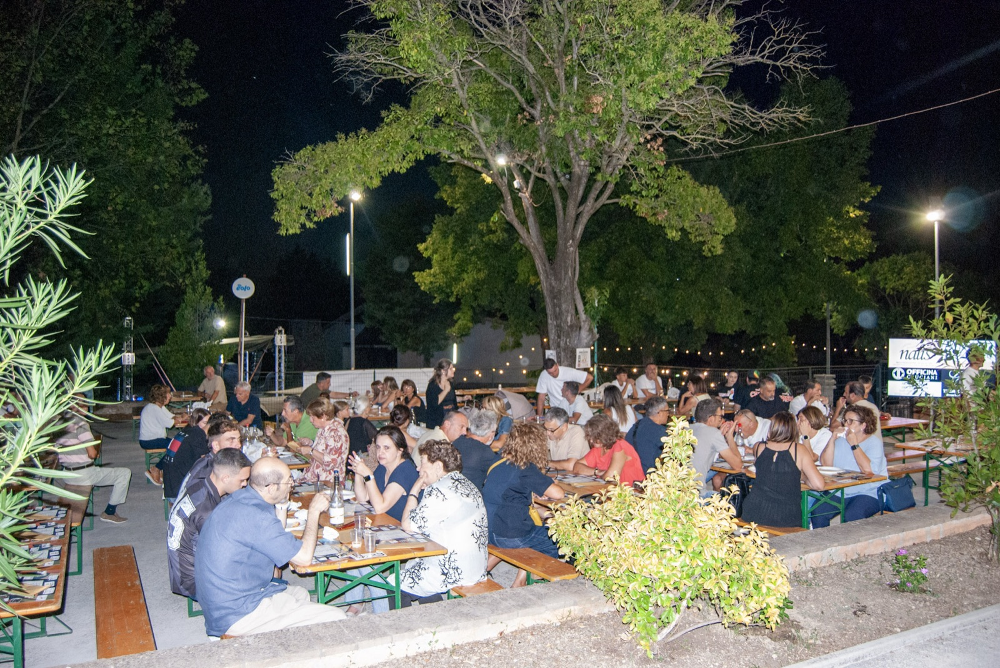

Una festa che torna a casa
Dagli anni '70 a oggi: la storia del Circoletto FASF è quella di uno spazio abbandonato e di un gruppo che ha deciso di riprenderselo.
La vecchia festa con cui siamo cresciuti
La festa di Sant'Egidio esiste dagli anni '70: per generazioni è stata il punto di ritrovo dell'estate a Borgo Trevi. È andata avanti fino al 2019, poi il Covid l'ha interrotta.
Negli anni successivi gli spazi dell'ex asilo di Via Sant'Egidio — il parco, la pista, i locali — sono rimasti totalmente abbandonati. Nel 2024, con l'opportunità di riprendere quegli spazi, è nata l'idea di riformare un gruppo per rifare la festa: quella con cui tutti i fondatori sono cresciuti.
Come siamo arrivati fin qui
Nasce la festa di Sant'Egidio
Il cuore sociale dell'estate a Borgo Trevi, per generazioni.
L'ultima edizione prima dello stop
Poi il Covid interrompe tutto.
Il parco resta abbandonato
Spazi, pista e locali dell'ex asilo fermi e vuoti.
Nasce il Circoletto FASF
Un gruppo di adulti e ragazzi giovani riprende gli spazi e li riporta a vivere.
Prima Sant'Egidio in Festa del nuovo corso
La festa torna a Borgo Trevi.
Sant'Egidio in Festa — Venti26
Seconda edizione, dal 28 agosto al 6 settembre.
Spazi che devono essere loro
Dalla voce del presidente del Circoletto FASF, sul punto di partenza del progetto.
"Il punto di partenza è stato ricreare un gruppo e subito dopo inserire ragazzi giovani, perché tanto questi sono spazi che devono godersi loro. Gli adulti sono più che altro d'aiuto: la festa e gli spazi devono essere una cosa loro, perché in futuro dovranno portarlo avanti loro." — Il Presidente, sull'unione tra esperienza organizzativa e nuove generazioni
"Per il paese, l'impatto che speriamo abbia questa associazione è far rivivere un po' la frazione, che negli ultimi anni era morta dal punto di vista associativo e sociale. Aver riaperto il parco e farlo vivere tutto l'anno, oltre la festa, è già un bel successo per noi." — Il Presidente, sull'impatto per Borgo Trevi
Sagre più grandi, grandi alleate
Il Circoletto FASF è circondato da feste più grandi e affermate — tra queste, l'Antifestival e la Festa della Trebbiatura. Il presidente non le vede come concorrenti, ma come un modello da seguire e un aiuto concreto: "qualsiasi cosa chiediamo, loro sono sempre disponibili". La nostra festa resta rivolta soprattutto a famiglie e bambini, con un intrattenimento via via più giovane grazie ai ragazzi dello staff.
Quello che ci scrivono
"Io conservo dei bei ricordi legati alla festa di Borgo Trevi ed è molto bello che si sia ripresa questa tradizione dopo lo stop del Covid. Certo, sono cambiate tante cose, però mi fa piacere che vengano mantenute le tradizioni portando delle novità. Continuate così e cercate di migliorare sempre di più e coinvolgere più persone possibili. Tenere vivo il senso di comunità è una cosa bellissima." — Messaggio ricevuto su Instagram
Vieni a scoprire il parco
Gli spazi del Circoletto FASF, area per area.
Scopri il parco →